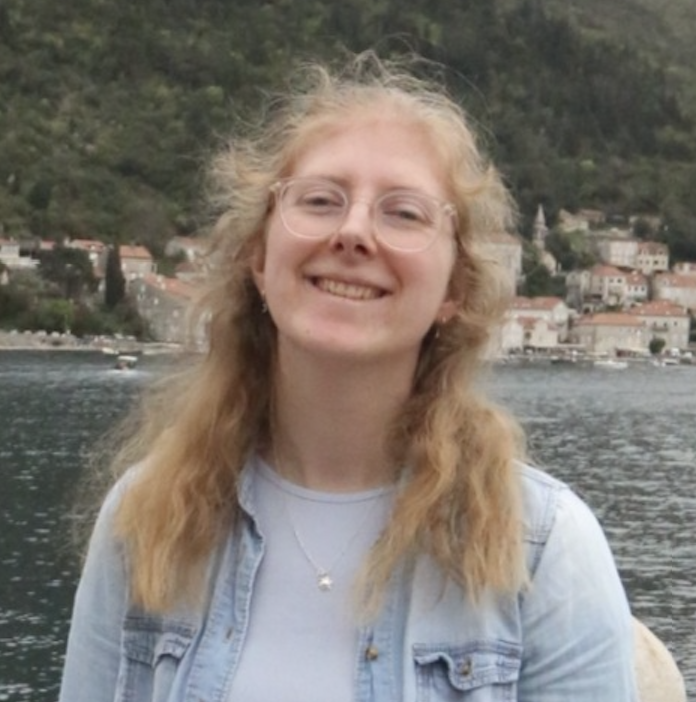
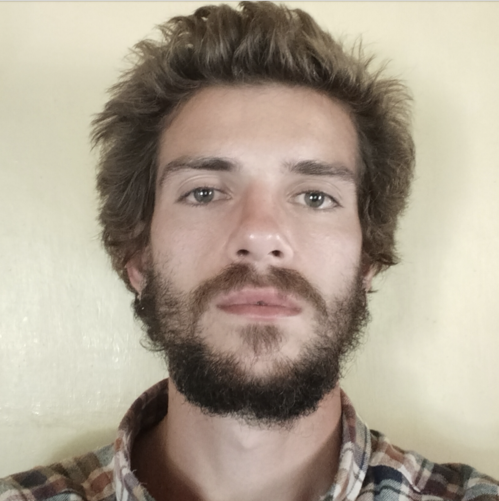
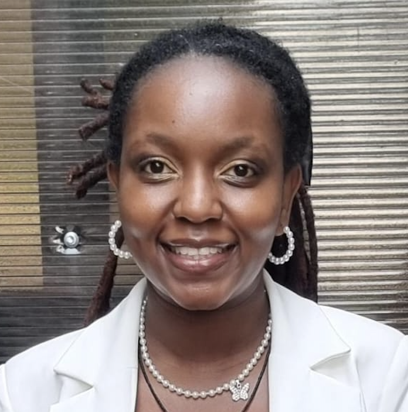
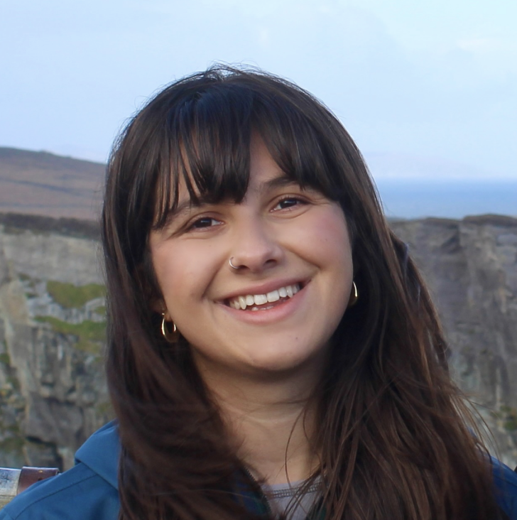
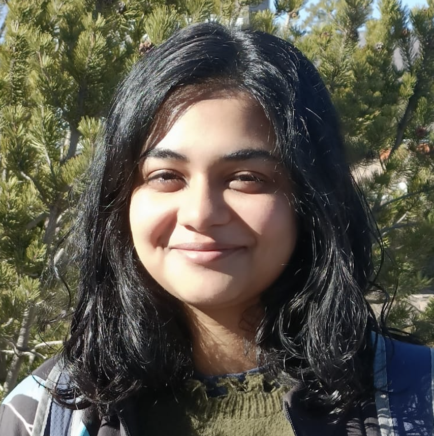
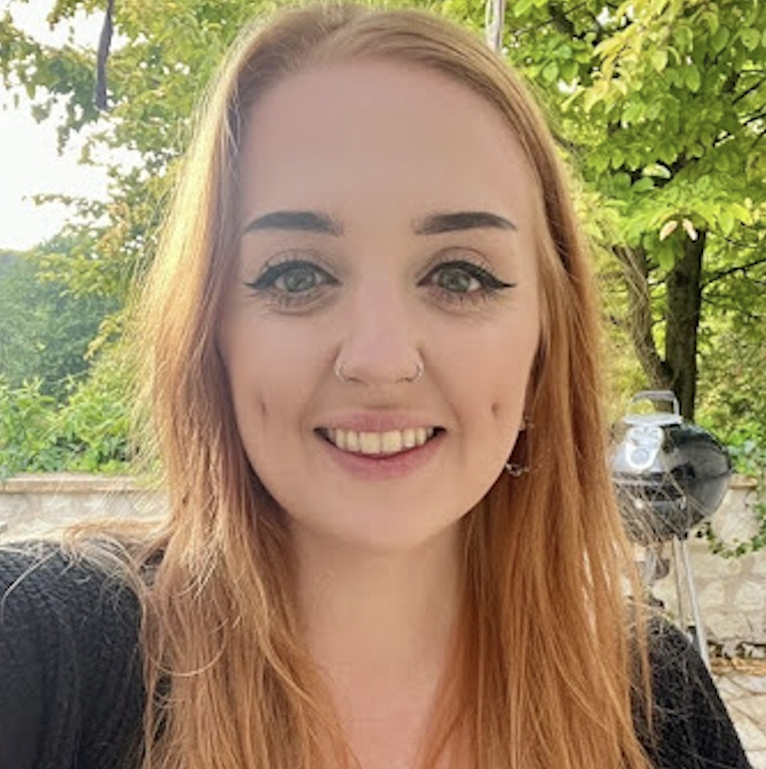

Cohort 2025

Abby MorrisAbby is a data scientist with four years professional experience after graduating with a master’s degree in physics. She worked across various projects during her time in industry, most recently in evaluating the use of Reinforcement Learning for Cyber Defence. Her current research interests are centred around improving upon physical models with physics-informed machine learning or other deep learning AI algorithms, from CNNs to transformers; and she is looking for interesting problem areas to apply these techniques to in the climate science or medical domains. Outside of her studies, she regularly performs with a film-music orchestra and goes bouldering. Supervisor:
More information here
Ed Daniels
Ed previously completed a first-class Master’s degree in Film and Television within Innovation. He has worked across robotics startups, academic publishers, and political intelligence organisations, developing practical AI systems for media, robotics, and automated analysis. His research interests span organoids, robotics, LLMs, and alignment, but as a general rule, he attracted to interesting problems and technology. Outside of research, he builds fun prototypes and websites, writes scripts or stand-up routines, and juggles fire. Supervisor:
More information here

Gonzalo Cancio-Donlebun FernandezGonzalo, is maths graduate from the University of Glasgow, where he completed a 5-year integrated master’s. Since graduating, he worked as a maths tutor and climbing guide, while making the intellectual transition into AI. His interests include model compression techniques and use of tensor networks to explore new DL architectures, as well as connections between AI cryptography, cybersecurity and autonomous cyber defence. Beyond studying, he enjoys outdoor life climbing and Brazilian jiu-jitsu alongside reading philosophy, literature and current affairs. Supervisor:
More information here
Guoda Laurinaviciute
Guoda completed a Bachelor’s degree in Artificial Intelligence at the University of Manchester before pursuing a Master’s by Research at the University of Bristol, where she focused on multimodal live audience understanding as part of the MyWorld research team. Her research interests include unmanned aerial vehicles (UAVs), defence applications, and computer vision. In her spare time, Guoda enjoys playing volleyball, bouldering, and cooking. Supervisor:
More information here
 Ikechukwu Ofodile
Ikechukwu Ofodile
Ike holds degrees in Electrical & Electronics Engineering and Robotics & Computer Engineering. He previously worked as a systems engineer in the design and deployment of autonomous UAV control systems. His research interests include AI-enabled perception systems, with multi-modal sensor fusion, computer vision, and predictive maintenance for unmanned and autonomous platforms. Beyond academia, he enjoys mentoring, playing lawn tennis and spending time with family. Supervisor:
More information here
Isobel Higgins
Isobel completed a BSc in Physics with Scientific Computing at the University of Bristol and briefly worked as a data assistant at an electric-vehicle charge-point data SME. These experiences strengthened her interest in applying analytical and problem-solving skills to real-world problems and inspired her to pursue research. Her research interests centre on the application of AI in healthcare, especially women’s reproductive and cognitive health. Outside of her studies, Isobel enjoys expressing her creative side through dancing, playing the piano, and trying various creative crafts. Supervisor:
More information here
Noah Baker
Noah graduated from the University of Cambridge in 2024 with an MEng in Information and Computer Engineering. He specialised in AI, completing a Master’s thesis on automatically detecting speech disorders in children. He is interested in neuro-symbolic AI, NLP, and generally methods of increasing the interpretability of state-of-the-art AI models. In his free time, he loves to play music and spend time in nature: hiking, camping, and climbing. Supervisor:
More information here

Nyamvula ChakayaChakaya is from Nairobi, Kenya and holds a BSc in Computer Science and an MSc in AI and Data Science. She previously worked as a data scientist at iLabAfrica in Nairobi, focusing on data analysis, visualisation and machine learning. Her interests in AI include natural language processing, large language models, generative AI, AI in healthcare and ethical AI, in particular how these systems are used in real world decision making. Outside of work, I enjoy listening to music, reading books and going to the gym. Supervisor:
More information here

Priya KharbandaPriya graduated from Newcastle University in 2023 with a Master’s in Electrical and Electronic Engineering and spent two years as a data consultant with a global engineering firm, working across data-driven solutions for complex technical challenges. Her studies and work in industry led her towards a strong interest in AI, particularly its applications in healthcare and its broader potential to enhance decision-making and system efficiency. She is especially interested in how AI systems earn trust in practice and how thoughtful design can support their safe, reliable use. Outside of work, she enjoys travelling, hiking, surfing, and spending time in the outdoors. Supervisor:
More information here
Russell Summers
Russell has background in Biomedical Science, conducting wet lab research exploring the role of specific gene knockouts on cognition. He has worked with the NHS and the Sanger Institute to map the spread of different coronavirus variants across the UK during the pandemic after whch he went on to earn MSc in Health Data Science and Statistics. During his MSc, he developed machine learning models to predict Alzheimer’s disease from blood metabolite data, stage and grade meningiomas from radiomic data. He also explored swarm optimisation algorithms with respect to multi-objective optimisation problems. Supervisor:
More information here

Sanjukta BhattacharyaSanjukta is interested in reinforcement learning as a method to improve foundation model outputs, along with similar post-training paradigms. She is excited to explore the capabilities of such reward conditioning in reasoning tasks. Other than AI research, she usually surfs or read books spanning from fiction to very diverse & orthogonal ideas! She has a strong engineering oriented background, with an undergraduate in electrical & computer engineering and a Master’s by Research in Machine Learning at the University of Edinburgh. Her thesis explored how to add logic during inference in large language models. Supervisor:
More information here

Sophie MawSophie completed an MEng in Electronic Engineering. Since then she worked as an AI Researcher for a start-up, alongside freelance AI work for researchers at the University of York. Her background includes computer vision, photogrammetry, MetaHuman and digital-double workflows using Unreal and Blender, building apps and developing TV-ready face-swap models used in a recent series. Her research interests include visual perception, vision systems, and human-level reasoning. Outside of work, she loves of chess, crosswords, and any puzzle or word game. She has a keen interest in philosophy of mind and neuroscience. Supervisor:
More information here
Tom Heslin
Tom graduated with an MSc in Medical Image Computing from UCL fifteen years ago. Since then, he has worked across software, MedTech, and professional services sectors. His work has involved hands on development and consulting work providing technical context to legal and financial teams for grants and M&A, alongside implementing projects such as LLM-based report drafting. He has strong leadership experience having created and managed multidisciplinary teams in a fast-growing company. His research interests focus on AI safety and explainability, with a specific interest in mechanistic interpretability within video and autonomous vehicle models. Outside of work, he spends time with his young family and practices historical fencing. Supervisor:
More information here